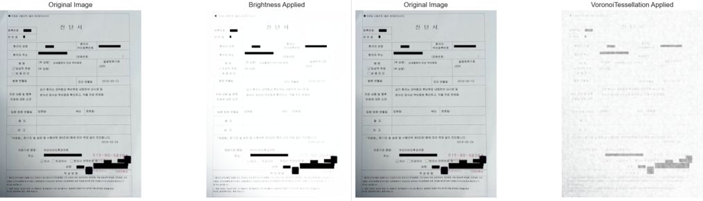
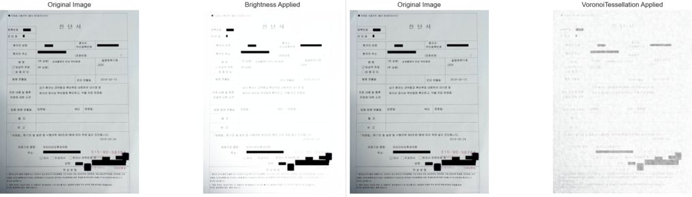

학부 시절 신경공학 수업에서 CT 영상 재구성과 관련된 내용을 학습하면서, 이미지 처리 기법 중 하나인 Radon 변환을 처음 접한 경험이 있었습니다. 당시에는 일반 이미지를 sinogram 형태로 변환하고, 다시 역변환을 통해 원래 형태로 복원하는 코드를 직접 작성하며, Radon 변환이 주파수 기반 정보로 이미지를 표현하고 처리할 수 있다는 특성을 흥미롭게 느꼈습니다.
이번 프로젝트에서 test 데이터를 분석하던 중, 문서가 회전된 형태로 존재하는 경우가 꽤 많다는 점을 발견했습니다. 이때 과거 경험이 떠올랐고, sinogram의 특성상 이미지를 다양한 각도로 회전시키며 정보를 누적해 하나의 함수 형태로 표현한다는 점에 주목했습니다. 따라서 단순히 원본 이미지를 학습하는 것보다, 이를 sinogram 형태로 변환한 후 학습시키면 회전에 대해 더 강인한 특성을 보일 수 있지 않을까 하는 가설을 세우고 실험을 설계했습니다.
기대했던 효과는 분명했습니다. 첫째, sinogram은 특정 노이즈를 주파수 패턴으로 변환하여 필터링 가능하게 만들며, 둘째로 회전/이동에 대해 일정한 구조로 변환되기 때문에 학습 안정성과 성능 향상이 기대되었습니다.
그러나 실험을 거듭할수록 명확한 한계점도 드러났습니다. 일반적인 CNN은 자연 이미지의 시각적 특징에 최적화되어 있기 때문에, sinogram 형태의 이미지에서는 의미 있는 패턴을 잘 추출하지 못했습니다. 이로 인해 성능이 오히려 떨어지기도 했고, 이미지의 지역성(locality)이 사라지면서 네트워크가 중요한 세부 정보를 인식하지 못하는 문제가 있었습니다.
이러한 실험을 통해 얻은 결론은 명확했습니다. sinogram은 학습 데이터로 직접 사용하기보다는, 전처리나 데이터 증강의 한 형태로 활용하는 것이 적합하며, 만약 이를 학습에 직접 활용하고자 한다면 Radon-domain CNN 등 도메인 특화된 아키텍처를 설계해야 한다는 것입니다. 단순한 성능 개선을 넘어서, 실험적 시도와 이론적 배경이 접목된 의미 있는 도전이었다고 생각합니다.


 
